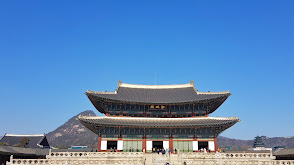
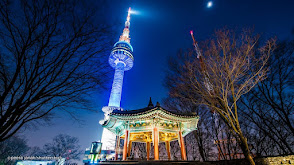
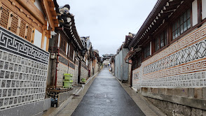
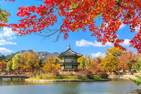
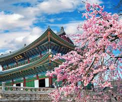
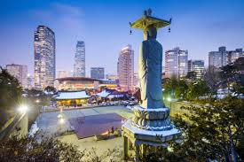
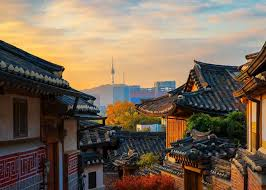
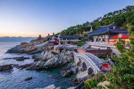
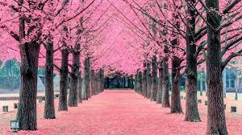

KCCI is the largest and oldest business organization in Korea.
Educational services are made available to those struggling with employment domestically through government mandates.
Climate
As a subtropical continental climate, each season of the year is distinct. The winters are bitterly cold and dry. The summers are humid, ending in monsoon season. Springs and autumns are transitional periods that are the most likely to have high precipitation and fog.
2024 Statistics
Population: 51,702,206
Employment rate: 69.4%
Gyeongbokgung Palace

📷: http://www.royalpalace.go.kr/
Free guided tours are offered of this 14th century royal palace with its museum & multiple gardens.
N Seoul Tower

📷: https://www.nseoultower.co.kr/
Open to the public since 1980, this tower provides panoramic views of the city below and a rotating restaurant.
Bukchon Hanok Village

📷: https://bukchon.seoul.go.kr/front/index.do
A village from the 14th century fills the narrow streets lined with restored traditional homes.
Welcome!

Gyeongbukgung Palace Garden, Seoul, South Korea

Gyeongbokgung Palace, Seoul, South Korea

Bongeunsa, Gangnam District, Seoul, South KoreaGyeongbokgung Palace, Seoul, South Korea

Bukchon Hanok Village, Jongno District, Seoul, South Korea

Haedong Yonggungsa Temple, Gijang-gun, Busan, South Korea

Nami Island, Chuncheon-si, Gangwon-do, South Korea